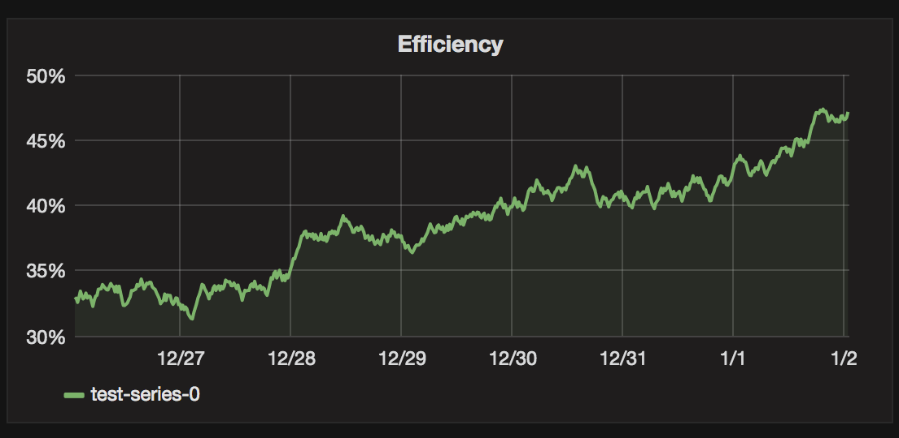

sankha narayan guria
I like to think of awesome ideas and build them. I have deep technology understanding of how things works and try to use it to build innovative solutions to hard problems. Having an interdisciplinary undergraduate background, I often find myself mashing many disciplines together. A lot of work that I have done revolves around the intersection in the domains of structure and dynamics of complex networks, the web and healthcare.
I am currently working as a Software Engineer at BrowserStack, building infrastructure for developers that help them build a better web. Previously, I have had the chance to work with awesome folks at Mozilla, when I used to contribute code to Firefox and it's JavaScript engine implementation. Apart from this I have had the opportunity to carry out research with Dr. Peter Thiemann from University of Freiburg, Germany. A lot of my technical understanding about the web stems from these past experiences.
Characterization of Schizophrenic subjects using properties of Brain Functional Networks
Current machinery for neuroimaging mostly generate temporal time series data. Our approach took the complex networks based approach to figure out if there lies any change in structure & behaviour of the voxels of the brain between a schizophrenic patient and a normal person. We constructed a graph theoretical model of the brain from fMRI scan's data and trained machine learning algorithms (SVMs & Decision trees) to predict whether a person is probably schizophrenic or not.
I did this work as a part of my Bachelor's thesis project with Dr. Ganesh Bagler, and it was nominated for the best project award in the entire class of 2015. A simple web based tool was also developed that allows an end user to directly test the machine learning models from the UI.


Bhaag: Training & Motion Tracking App

Bhaag was a Windows phone app developed during the Microsoft Code.Fun.Do Hackathon 2015 at IIT Jodhpur. The idea was to imagine the phone as a digital augmentation of the human body itself.
The app leverages sensors in the phone like - GPS, accelerometer and gyroscope to track the motion and direction of arms or legs as a time series. All these parameters represented as a time series gives us very accurate measure of where the person was and the accuracy with which the person was doing the physical activity or sports training session.
We had developed location tracking and stride calculation for running activities. Later we implemented a prototype of permutation distributed clustering method to measure similarities between two time series. We envisioned this as a way to allow trainers to teach students specific moves perfectly. Imagine a cricket or table tennis coach recording his way of playing a shot, and then transferring the data to your smartphone so that you can train and be measured on how closely you mimic your coach's way of playing the shot.
This app won this second position in the hackathon.
Biosense: Human Posture Detection Kit
Biosense was the project we worked on during the MIT Media Labs Design Innovation Workshop 2013 in Bangalore, India.
During the field trip, we spoke to a number of manual labour workers like carpenters - and one common theme we noticed was during the course of the day they could never understand that they were overworking and night they used to suffer from body aches at wrists and arms. We decided to solve this problem during the course of the workshop.
We developed gloves that tracks the strain build-up on muscles due to recurring strenuous activity on the wrists and provides haptic feedback when it crosses permissible limits. This encourages the person to take short breaks during working hours that ultimately do not lead to muscle pain post-work hours. Our algorithm supported exponential backoff to handle resting periods between two working spells.
We made a lot of design trade-offs to get our entire design inside a glove. We used flex sensor to calculate the bend of the hand, which fed the data over wires into an Arduino kept outside the glove. The Arduino computed the data and sent the haptic feedback into gloves which used to vibrate to let the wearer know they were crossing the limits for permissible activity. Pressure sensors being way too bulky, we designed our own pressure sensors with sponge and alumninium foils that can be fit inside the gloves to figure out the pressure points.
First prototype working, this stuff tells me when my hand posture is wrong. #di2013 pic.twitter.com/nfUKZM0e
— Sankha Narayan Guria (@sankha93) January 23, 2013
Spread of Information & Correlation of Events on a Social Network
I did this project as a part of the Socio-Economic Networks & Business Dynamics course. We tried to understand how events in the real life spread through different communities online and who are the key influencers.
We scraped tweets from Twitter relating to the keywords Snowden, NSA, Rupee, Oil and Dollar which were used for retweets or tagged in some conversation. We used them to build a network of all the interactions which was used to for community detection and figuring out the key nodes in the network that form the weak links which are responsible for diverse spreading of information.
A key insight that we came across was that Twitter accounts with high followers (typically news/publishing agencies) were apparantly not the influencers in the network. It was the personal handles of people, especially journalists were key nodes that played the role of weak link making them good at spreading a piece of information throughout the network.

{kind=link}
{kind=link}
{kind=link}
Solar Panel Efficiency Monitoring System
I designed this system in a contest sponsored by the Ministry of New & Renewable Energy of Government of India to increase awareness about solar energy in the country. We used the data generated from rooftop photovoltaic cells having temperature, wind velocity, hours of operation, etc. and tried to find how efficiently was the power generated by Power Conditioning Unit (PCU). We developed the model and GUI for the same. Our solution was awarded the winner position in the contest.
{kind=link}
Stock Price Estimation using Volatility as a Stochastic Process
The basic stock option pricing models involving Black Schole's equations use the volatility as a constant in the distribution. The volatility is risk associated with the stock, and changes through the course of time as the market evolves. In the Financial Engineering course, I worked on trying to see how the stochastic calculus equations change for different models once we start treating the volatility of the stock as a Gaussian process as well. An alternate model was also presented that looked at the return as a random process and how it affects the model.
This work was mostly theoretical and involved heavy use of mathematics. The PDF of the final presentation is available.
Get in touch with me on Twitter @sankha93 or on email at sankha93@gmail.com.